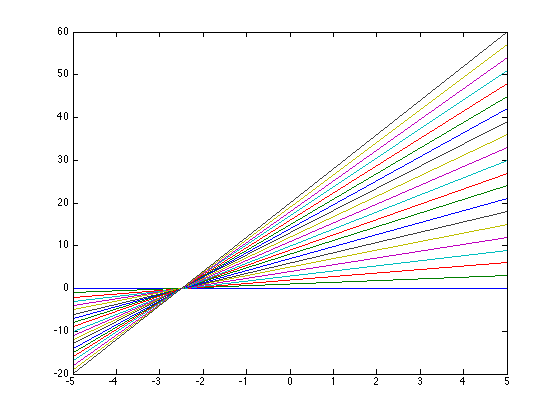

Contents
Plotlinear.m
From A First Course in Machine Learning, Chapter 1. Simon Rogers, 31/10/11 [simon.rogers@glasgow.ac.uk]
clear all;close all;
Define two points for the x-axis
x = [-5 5];
Define the different intercepts and gradients to plot
w0 = [0:1:20]; w1 = [0:0.4:8];
Plot all of the lines
figure(1); hold off for i = 1:length(w0) plot(x,w0(i)+w1(i).*x); hold all fprintf('\ny = %g + %g x',w0(i),w1(i)); end
y = 0 + 0 x y = 1 + 0.4 x y = 2 + 0.8 x y = 3 + 1.2 x y = 4 + 1.6 x y = 5 + 2 x y = 6 + 2.4 x y = 7 + 2.8 x y = 8 + 3.2 x y = 9 + 3.6 x y = 10 + 4 x y = 11 + 4.4 x y = 12 + 4.8 x y = 13 + 5.2 x y = 14 + 5.6 x y = 15 + 6 x y = 16 + 6.4 x y = 17 + 6.8 x y = 18 + 7.2 x y = 19 + 7.6 x y = 20 + 8 x
Request user input
close all; figure(1);hold off fprintf('\nKeeps plotting lines on the current plot until you quit (ctrl-c)\n'); while 1 intercept = str2num(input('Enter intercept:','s')); gradient = str2num(input('Enter gradient:','s')); plot(x,intercept + gradient.*x);hold all fprintf('\n y = %g + %g x\n\n',intercept,gradient); end
Keeps plotting lines on the current plot until you quit (ctrl-c)
Error using ==> input
Cannot call INPUT from EVALC.
Error in ==> plotlinear at 29
intercept = str2num(input('Enter intercept:','s'));